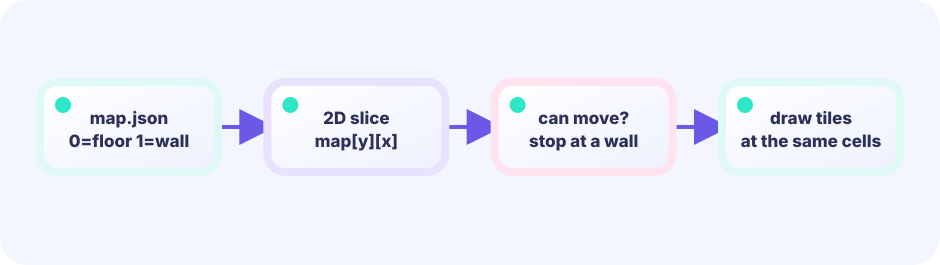

X collision
After moving horizontally, if the player overlaps a platform, push them back to the edge in the direction they came from. Y stays untouched.
player.x = p.x - player.w★★★★☆ / PLAYABLE
Two techniques power every side-scroller: separating X and Y collision resolution so the player slides correctly against surfaces, and a lerp camera that smoothly follows without jerking.
On screen you see original hero Ebi Tenjiroh; hits still use simple shapes. Movement math still lives in the same LEVEL 01 state boundary.
PLAYABLE / WEBASSEMBLY
A/D or arrow keys to run, Space or tap the upper screen to jump. Collect all 7 coins and reach the goal. Falling off the stage is a miss.
FIRST-TIME READER
Find where this one line is used, then follow how its value changes on screen. This is the shared game-state boundary: add rules in Update, then choose an independent presentation in Draw. The numbered steps below add one system at a time.
ONE RULE TO TRACE
Match the explanation to this line, then test the change in the game.
cameraX += (playerX-cameraX) * .09See overlap first
First check whether the two boxes overlap. Move out on X only, then on Y only, so a corner does not break landing. A decimal gravity value makes the fall smooth.


DEEP DIVE / COLLISION AND CAMERA
The trick is resolving X and Y separately. Fixing both at once can move the player vertically after merely walking into a floor corner, causing bugs such as failing to land or losing a jump when touching a wall. Fix horizontal overlap on X, then vertical overlap on Y, and the player can slide along a wall and still land cleanly.
Read the overlap-fix ideas first, then the camera card.
After moving horizontally, if the player overlaps a platform, push them back to the edge in the direction they came from. Y stays untouched.
player.x = p.x - player.wAfter moving vertically, check again. Landing from above sets onGround = true and zeros vertical velocity. Hitting a ceiling from below also zeros velocity.
onGround = trueEvery tick, the camera edges a little closer to its target — specifically, about 9% of the remaining distance. Jumping straight to 100% would snap the camera onto every tiny wiggle the player makes, which looks jerky and dizzying. Closing the gap gradually instead keeps the motion smooth and easy on the eyes. This gradual catch-up is called "lerp" (linear interpolation), or easing.
camera += (target - camera) * .09TRY IT / LAB
The ruler below shows world coordinates, which never move inside the stage. As the camera moves right, the ruler slides left while the player's world X stays unchanged. Screen X = world − camera.
A slow-motion model of the real game rule.
TRY IT · GO
target := playerX - screenW/2 camX += (target - camX) * 0.15 drawX := worldX - camX
—
THE CAMERA LERP
target = player.x - width * 0.38then every tickcamera += (target - camera) * 0.09The target keeps the player at 38% of the screen width. Each tick the camera moves 9% closer. Big gaps close quickly; small gaps close gently, giving a natural feel. This follow rate is easing: each tick closes a fraction of the gap. Using 100% instead of 9% would snap the camera to the target every tick, reacting jarringly to every small player movement.
IN THE REAL GAME
Mixing both axes in one pass causes corner-clipping bugs where the player can pass through the edge of a platform. Separate passes make the behavior predictable.
After vertical movement in each Update, reset onGround = false, then immediately rebuild the answer from Y collisions. Jump input has already used the previous contact result before this reset. If the player is still standing, collision resolution restores true in the same Update, so there is no one-step gap where a grounded player becomes airborne.
math.Mod(a, 320) is remainder (safe for negatives). It folds camera scroll into 0..320 so a 320px parallax strip can tile forever.
// move horizontally and resolve
g.player.x += g.vx
for _, p := range g.platforms {
if overlap(g.player, p) {
if g.vx > 0 {
g.player.x = p.x - g.player.w
} else if g.vx < 0 {
g.player.x = p.x + p.w
}
g.vx = 0
}
}
// move vertically and resolve
g.player.y += g.vy
g.onGround = false // rebuild contact for this Update
for _, p := range g.platforms {
if overlap(g.player, p) {
if g.vy > 0 { // falling → land
g.player.y = p.y - g.player.h
g.onGround = true // only when landed
} else if g.vy < 0 { // rising → ceiling
g.player.y = p.y + p.h
}
g.vy = 0
}
}
// lerp camera toward player
target := g.player.x - width*.38
g.camera += (target - g.camera) * .09TODAY — look here first
The code below is the game's main logic (the hero art loads from shared package internal/hero). Copy it to your editor — but first follow the three “look here first” points above.
Note: inline comments in this full listing are in Japanese for young learners. The English teaching snippets above are your guide.
package main
import (
"fmt"
"image/color"
"math"
"github.com/hajimehoshi/ebiten/v2"
"github.com/hajimehoshi/ebiten/v2/ebitenutil"
"github.com/hajimehoshi/ebiten/v2/inpututil"
"github.com/hajimehoshi/ebiten/v2/vector"
"github.com/kumagi/EbiShowcase/internal/hero"
)
const (
screenWidth = 480
screenHeight = 720
gravity = 0.62
jumpSpeed = -12.5
goalX = 2320.0
)
type rect struct {
x, y, w, h float64
}
type game struct {
player rect
vx, vy float64
cameraX float64
platforms []rect
coins []rect
collected int
onGround bool
cleared bool
gameOver bool
}
func newGame() *game {
g := &game{player: rect{60, 560, 28, 38}}
g.platforms = []rect{
{0, 640, 420, 80},
{470, 590, 230, 130},
{760, 640, 260, 80},
{1080, 565, 210, 155},
{1350, 640, 300, 80},
{1710, 570, 220, 150},
{1990, 640, 430, 80},
{250, 510, 120, 24},
{590, 450, 110, 24},
{850, 500, 100, 24},
{1160, 415, 100, 24},
{1450, 490, 120, 24},
{1800, 420, 110, 24},
{2110, 500, 110, 24},
}
coinSpots := []rect{
{290, 475, 14, 14},
{625, 415, 14, 14},
{890, 465, 14, 14},
{1198, 380, 14, 14},
{1500, 455, 14, 14},
{1845, 385, 14, 14},
{2155, 465, 14, 14},
}
g.coins = append(g.coins, coinSpots...)
return g
}
func overlap(a, b rect) bool {
return a.x < b.x+b.w && a.x+a.w > b.x && a.y < b.y+b.h && a.y+a.h > b.y
}
func clamp(v, lo, hi float64) float64 {
return math.Max(lo, math.Min(hi, v))
}
func restartPressed() bool {
if inpututil.IsKeyJustPressed(ebiten.KeySpace) {
return true
}
if inpututil.IsMouseButtonJustPressed(ebiten.MouseButtonLeft) {
return true
}
if len(inpututil.AppendJustPressedTouchIDs(nil)) > 0 {
return true
}
return false
}
func overlay(screen *ebiten.Image, msg string) {
vector.DrawFilledRect(screen, 55, 280, 370, 150, color.RGBA{6, 18, 37, 235}, false)
ebitenutil.DebugPrintAt(screen, msg, 145, 330)
}
func (g *game) readControls() (left, right, jump bool) {
left = ebiten.IsKeyPressed(ebiten.KeyArrowLeft) || ebiten.IsKeyPressed(ebiten.KeyA)
right = ebiten.IsKeyPressed(ebiten.KeyArrowRight) || ebiten.IsKeyPressed(ebiten.KeyD)
jump = inpututil.IsKeyJustPressed(ebiten.KeySpace) ||
inpututil.IsKeyJustPressed(ebiten.KeyArrowUp) ||
inpututil.IsKeyJustPressed(ebiten.KeyW)
// 下半分タッチ＝移動、上半分タップ＝ジャンプ
for _, id := range ebiten.AppendTouchIDs(nil) {
x, y := ebiten.TouchPosition(id)
if y > screenHeight/2 {
if x < screenWidth/2 {
left = true
} else {
right = true
}
}
}
if inpututil.IsMouseButtonJustPressed(ebiten.MouseButtonLeft) {
_, y := ebiten.CursorPosition()
if y < screenHeight/2 {
jump = true
}
}
for _, id := range inpututil.AppendJustPressedTouchIDs(nil) {
_, y := ebiten.TouchPosition(id)
if y < screenHeight/2 {
jump = true
}
}
return left, right, jump
}
// --- ここから Update ---
func (g *game) Update() error {
if g.cleared || g.gameOver {
if restartPressed() {
*g = *newGame()
}
return nil
}
left, right, jump := g.readControls()
if left {
g.vx -= 0.65
}
if right {
g.vx += 0.65
}
if !left && !right {
g.vx *= 0.78
}
g.vx = clamp(g.vx, -6, 6)
if jump && g.onGround {
g.vy = jumpSpeed
g.onGround = false
}
// 重力
g.vy = math.Min(g.vy+gravity, 14)
// 横移動 → 壁との当たり
g.player.x += g.vx
for _, p := range g.platforms {
if overlap(g.player, p) {
if g.vx > 0 {
g.player.x = p.x - g.player.w
} else if g.vx < 0 {
g.player.x = p.x + p.w
}
g.vx = 0
}
}
// 縦移動 → 床・天井との当たり
g.player.y += g.vy
g.onGround = false
for _, p := range g.platforms {
if overlap(g.player, p) {
if g.vy > 0 {
g.player.y = p.y - g.player.h
g.onGround = true
} else if g.vy < 0 {
g.player.y = p.y + p.h
}
g.vy = 0
}
}
// コイン取得
for i := len(g.coins) - 1; i >= 0; i-- {
if overlap(g.player, g.coins[i]) {
g.coins = append(g.coins[:i], g.coins[i+1:]...)
g.collected++
}
}
if g.player.y > screenHeight+100 {
g.gameOver = true
}
if g.player.x > goalX {
g.cleared = true
}
// カメラはプレイヤーを少し左に置いて追う
target := g.player.x - screenWidth*0.38
g.cameraX += (target - g.cameraX) * 0.09
g.cameraX = clamp(g.cameraX, 0, 1940)
return nil
}
// --- ここから Draw ---
func (g *game) Draw(screen *ebiten.Image) {
screen.Fill(color.RGBA{91, 184, 230, 255})
// 遠い丘（パララックス）
for i := 0; i < 9; i++ {
x := float32(i*320) - float32(math.Mod(g.cameraX*0.25, 320))
vector.DrawFilledCircle(screen, x, 560, 150, color.RGBA{71, 145, 155, 255}, false)
}
for _, p := range g.platforms {
x := float32(p.x - g.cameraX)
vector.DrawFilledRect(screen, x, float32(p.y), float32(p.w), float32(p.h), color.RGBA{51, 99, 68, 255}, false)
vector.DrawFilledRect(screen, x, float32(p.y), float32(p.w), 10, color.RGBA{98, 205, 91, 255}, false)
}
for _, c := range g.coins {
x := float32(c.x - g.cameraX + c.w/2)
y := float32(c.y + c.h/2)
vector.DrawFilledCircle(screen, x, y, 9, color.RGBA{255, 215, 60, 255}, false)
vector.StrokeCircle(screen, x, y, 12, 2, color.RGBA{255, 244, 170, 255}, false)
}
px := float32(g.player.x - g.cameraX)
py := float32(g.player.y)
hero.DrawBottomCentered(screen, float64(px)+g.player.w/2, float64(py)+g.player.h, g.player.h*1.55)
flagX := float32(2340 - g.cameraX)
vector.DrawFilledRect(screen, flagX, 440, 6, 200, color.RGBA{235, 240, 245, 255}, false)
vector.DrawFilledRect(screen, flagX+6, 450, 70, 42, color.RGBA{255, 211, 65, 255}, false)
ebitenutil.DebugPrintAt(screen, fmt.Sprintf("COINS %d/7", g.collected), 18, 18)
ebitenutil.DebugPrintAt(screen, "RUN: A/D OR BOTTOM TOUCH JUMP: SPACE OR TOP TOUCH", 56, 680)
if g.cleared {
overlay(screen, "COURSE CLEAR!\n\nTAP / SPACE TO RUN AGAIN")
} else if g.gameOver {
overlay(screen, "MISS!\n\nTAP / SPACE TO RETRY")
}
}
func (g *game) Layout(_, _ int) (int, int) {
return screenWidth, screenHeight
}
func main() {
ebiten.SetWindowSize(screenWidth, screenHeight)
ebiten.SetWindowTitle("Platformer — Ebitengine")
if err := ebiten.RunGame(newGame()); err != nil {
panic(err)
}
}
WITHOUT AXIS SEPARATION
Resolving both axes together lets the player get stuck on platform edges. Separating them eliminates the whole class of corner bugs.
WITH AXIS SEPARATION
The player slides freely along walls. Hitting a ceiling mid-jump stops vertical movement but keeps horizontal momentum intact.
YOUR FIRST TUNING
Increase the camera lerp factor 0.09 for a snappier camera; lower it for a lazier follow. Change the jump velocity -12.5 and gravity 0.62 to drastically alter how the game feels to play.
FEEDBACK